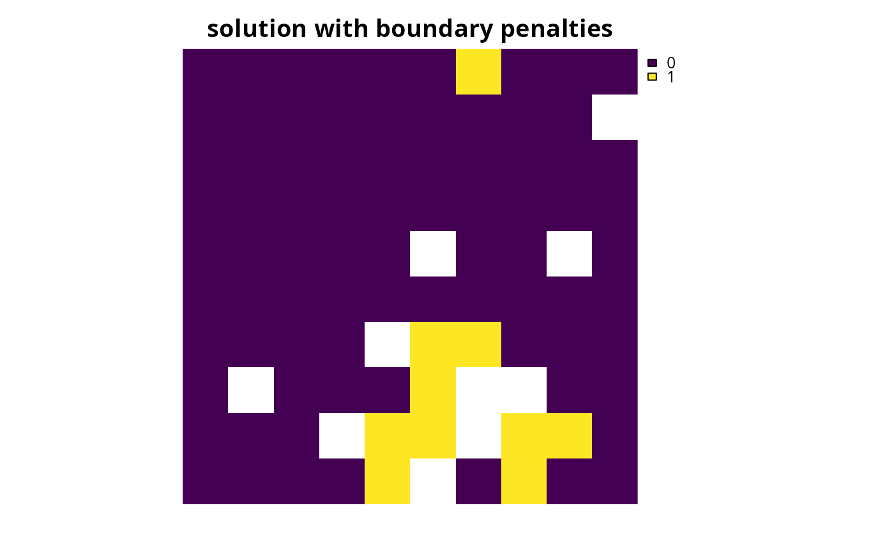
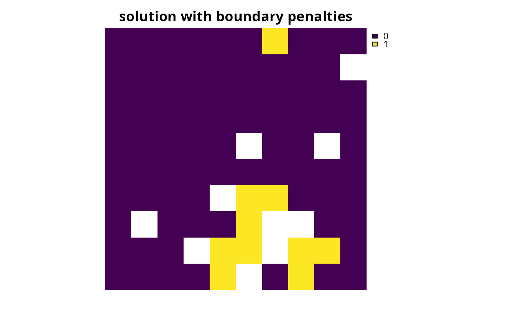

Specify that the Gurobi software should be used to solve a conservation planning problem (Gurobi Optimization LLC 2021). This function can also be used to customize the behavior of the solver. It requires the gurobi package to be installed (see below for installation instructions).
Usage
add_gurobi_solver(
x,
gap = 0.1,
time_limit = .Machine$integer.max,
presolve = 2,
threads = 1,
first_feasible = FALSE,
numeric_focus = FALSE,
node_file_start = Inf,
start_solution = NULL,
verbose = TRUE
)Arguments
- x
problem()object.- gap
numericgap to optimality. This gap is relative and expresses the acceptable deviance from the optimal objective. For example, a value of 0.01 will result in the solver stopping when it has found a solution within 1% of optimality. Additionally, a value of 0 will result in the solver stopping when it has found an optimal solution. The default value is 0.1 (i.e., 10% from optimality).- time_limit
numerictime limit (seconds) for generating solutions. The solver will return the current best solution when this time limit is exceeded. The default value is the largest integer value (i.e.,.Machine$integer.max), effectively meaning that solver will keep running until a solution within the optimality gap is found.- presolve
integernumber indicating how intensively the solver should try to simplify the problem before solving it. Available options are: (-1) automatically determine the intensity of pre-solving, (0) disable pre-solving, (1) conservative level of pre-solving, and (2) very aggressive level of pre-solving . The default value is 2.- threads
integernumber of threads to use for the optimization algorithm. The default value is 1.- first_feasible
logicalshould the first feasible solution be be returned? Iffirst_feasibleis set toTRUE, the solver will return the first solution it encounters that meets all the constraints, regardless of solution quality. Note that the first feasible solution is not an arbitrary solution, rather it is derived from the relaxed solution, and is therefore often reasonably close to optimality. Defaults toFALSE.- numeric_focus
logicalshould extra attention be paid to verifying the accuracy of numerical calculations? This may be useful when dealing with problems that may suffer from numerical instability issues. Beware that it will likely substantially increase run time (sets the GurobiNumericFocusparameter to 3). Defaults toFALSE.- node_file_start
numericthreshold amount of memory (in GB). Once the amount of memory (RAM) used to store information for solving the optimization problem exceeds this parameter value, the solver will begin storing this information on disk (using the GurobiNodeFileStartparameter). This functionality is useful if the system has insufficient memory to solve a given problem (e.g., solving the problem with default settings yields theOUT OF MEMORYerror message) and a system with more memory is not readily available. For example, a value of 4 indicates that the solver will start using the disk after it uses more than 4 GB of memory to store information on solving the problem. Defaults toInfsuch that the solver will not attempt to store information on disk when solving a given problem.- start_solution
NULLor object containing the starting solution for the solver. This is can be useful because specifying a starting solution can speed up the optimization process. Defaults toNULLsuch that no starting solution is used. To specify a starting solution, the argument tostart_solutionshould be in the same format as the planning units (i.e., aNULL,numeric,matrix,data.frame,terra::rast(), orsf::sf()object). See the Start solution format section for more information.- verbose
logicalshould information be printed while solving optimization problems? Defaults toTRUE.
Value
An updated problem() object with the solver added to it.
Details
Gurobi is a state-of-the-art commercial optimization software with an R package interface. It is by far the fastest of the solvers available for generating prioritizations, however, it is not freely available. That said, licenses are available to academics at no cost. The gurobi package is distributed with the Gurobi software suite. This solver uses the gurobi package to solve problems. For information on the performance of different solvers, please see Schuster et al. (2020) for benchmarks comparing the run time and solution quality of different solvers when applied to different sized datasets.
Installation
Please see the Gurobi Installation Guide vignette for details on installing the Gurobi software and the gurobi package. You can access this vignette online or using the following code:
vignette("gurobi_installation_guide", package = "prioritizr")Start solution format
Broadly speaking, the argument to start_solution must be in the same
format as the planning unit data in the argument to x.
Further details on the correct format are listed separately
for each of the different planning unit data formats:
xhasnumericplanning unitsThe argument to
start_solutionmust be anumericvector with each element corresponding to a different planning unit. It should have the same number of planning units as those in the argument tox. Additionally, any planning units missing cost (NA) values should also have missing (NA) values in the argument tostart_solution.xhasmatrixplanning unitsThe argument to
start_solutionmust be amatrixvector with each row corresponding to a different planning unit, and each column correspond to a different management zone. It should have the same number of planning units and zones as those in the argument tox. Additionally, any planning units missing cost (NA) values for a particular zone should also have a missing (NA) values in the argument tostart_solution.xhasterra::rast()planning unitsThe argument to
start_solutionbe aterra::rast()object where different grid cells (pixels) correspond to different planning units and layers correspond to a different management zones. It should have the same dimensionality (rows, columns, layers), resolution, extent, and coordinate reference system as the planning units in the argument tox. Additionally, any planning units missing cost (NA) values for a particular zone should also have missing (NA) values in the argument tostart_solution.xhasdata.frameplanning unitsThe argument to
start_solutionmust be adata.framewith each column corresponding to a different zone, each row corresponding to a different planning unit, and cell values corresponding to the solution value. This means that if adata.frameobject containing the solution also contains additional columns, then these columns will need to be subsetted prior to using this function (see below for example withsf::sf()data). Additionally, any planning units missing cost (NA) values for a particular zone should also have missing (NA) values in the argument tostart_solution.xhassf::sf()planning unitsThe argument to
start_solutionmust be asf::sf()object with each column corresponding to a different zone, each row corresponding to a different planning unit, and cell values corresponding to the solution value. This means that if thesf::sf()object containing the solution also contains additional columns, then these columns will need to be subsetted prior to using this function (see below for example). Additionally, the argument tostart_solutionmust also have the same coordinate reference system as the planning unit data. Furthermore, any planning units missing cost (NA) values for a particular zone should also have missing (NA) values in the argument tostart_solution.
References
Gurobi Optimization LLC (2021) Gurobi Optimizer Reference Manual. https://www.gurobi.com.
Schuster R, Hanson JO, Strimas-Mackey M, and Bennett JR (2020). Exact integer linear programming solvers outperform simulated annealing for solving conservation planning problems. PeerJ, 8: e9258.
See also
See solvers for an overview of all functions for adding a solver.
Other solvers:
add_cbc_solver(),
add_cplex_solver(),
add_default_solver(),
add_highs_solver(),
add_lsymphony_solver,
add_rsymphony_solver()
Examples
# \dontrun{
# load data
sim_pu_raster <- get_sim_pu_raster()
sim_features <- get_sim_features()
# create problem
p1 <-
problem(sim_pu_raster, sim_features) %>%
add_min_set_objective() %>%
add_relative_targets(0.1) %>%
add_binary_decisions() %>%
add_gurobi_solver(gap = 0, verbose = FALSE)
# generate solution
s1 <- solve(p1)
# plot solution
plot(s1, main = "solution", axes = FALSE)
 # create a similar problem with boundary length penalties and
# specify the solution from the previous run as a starting solution
p2 <-
problem(sim_pu_raster, sim_features) %>%
add_min_set_objective() %>%
add_relative_targets(0.1) %>%
add_boundary_penalties(10) %>%
add_binary_decisions() %>%
add_gurobi_solver(gap = 0, start_solution = s1, verbose = FALSE)
# generate solution
s2 <- solve(p2)
# plot solution
plot(s2, main = "solution with boundary penalties", axes = FALSE)

# }
# create a similar problem with boundary length penalties and
# specify the solution from the previous run as a starting solution
p2 <-
problem(sim_pu_raster, sim_features) %>%
add_min_set_objective() %>%
add_relative_targets(0.1) %>%
add_boundary_penalties(10) %>%
add_binary_decisions() %>%
add_gurobi_solver(gap = 0, start_solution = s1, verbose = FALSE)
# generate solution
s2 <- solve(p2)
# plot solution
plot(s2, main = "solution with boundary penalties", axes = FALSE)

# }